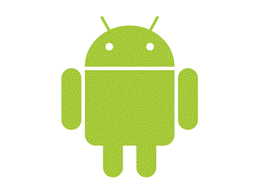
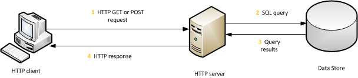

CS 86
|  CS 86 |
CS 86 Android Development |
The Model-View-Controller (MVC) architecture clearly separates applications into three parts: data model, presentation, and program logic.
The MVC reduces the coupling among the three parts of an application making it easier to develop and maintain. Originally developed for GUIs with Smalltalk, it was later discovered to be a valuable architecture for other applications, especially web apps. 1
MVC is an application of the software engineering principle known as separation of concerns, which basically stated implies that it is best to segregate different types of functionality within an application as much as possible.
Advantages of the MVC architecture are simplicity, independence, scalability, and developer specialization. 2
 3
3
Most web apps have a three-tiered architecture:
The client cannot directly access the information tier. Rather, it does so indirectly through the web server as follows:

Figure 1. Web App Tiers
As you can see, the client, the server, and the database each have a role to play and a set of technologies they support. It is through the communication and cooperation of these three distinct tiers that the web app does its magic.
Now, let us see how these tiers map to the MVC pattern:
| HTTP client | middle tier | information tier |
| View | Controller | Model |
With the MVC approach, we organize our work into three areas of responsibility. Initially, this involves more work and yields a more complex app. However, it makes the app much more flexible, robust, secure, and extensible.
Model–View–Controller (MVC) Wikipedia
Model View Controller Martin FowlerModel-View-Controller Oracle/Sun
1 Programming the World Wide Web, 6e, Robert W. Sebesta
2 Web-Based Application Development, Ralph F. Grove
3 Android Programming, The Big Nerd Ranch Guide, Bill Phillips and Brian Hardy